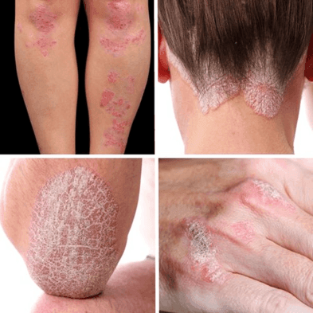

क्रांतिकारी खोज! सोरायसिस को अभी तुरंत "न" कहें!
सोरायसिस यह त्वचा की एक बहुत आम बीमारी है लेकिन अधिकतर लोग इसे पहचानना नहीं जानते। इसमें त्वचा कोशिकाओं की अत्यधिक बढ़त होती है जिससे मोटी पपड़ी जम जाती है। ये दाग अलग-अलग साइज़ के हो सकते हैं और मुख्य रूप से घुटनों, कोहनियों, खोपड़ी, हाथों, पैरों और पीठ पर आते हैं।
इसके लक्षण होते हैं छोटे-छोटे उभार जिनमें मवाद भरी होती है और जिनके चारों ओर त्वचा लाल हो जाती है, लाल रंग के दाग जिनके चारों ओर सफ़ेद रंग की मृत त्वचा कोशिकाएँ या पपड़ी जमी होती हैं । सोरायसिस पुरुषों और महिलाओं दोनों को हो सकता है। यह बच्चों और व्यसकों दोनों को जकड़ सकती है। महिलाओं को पुरुषों की तुलना में सोरायसिस कम उम्र में हो जाती है। आंकड़े दर्शाते हैं कि सोरायसिस से ग्रस्त लगभग 30% लोगों के किसी करीबी रिश्तेदार को भी यह बीमारी होती है।
और हालांकि यह बीमारी संक्रामक नहीं होती , इस बीमारी से ग्रस्त लोग अधितकर अलग-थलग पड़ जाते हैं और समाज से कट जाते हैं क्योंकि उनकी त्वचा सामान्य से अलग दिखती है। सोरायसिस के 84% मरीज भेदभाव और अपमान का सामना करते हैं।
सोरायसिस के लिए जिम्मेदार कारणों में शामिल हैं ठंडा और सूखा पर्यावरण, त्वचा के जख्म, तनाव और चिंता, कुछ प्रकार के संक्रमण (टोंसिलाइटिस या फंगल इन्फेक्शन थ्रश), और कुछ एंटी-इन्फेलेमेटरी दवाएं, धूम्रपान, और शराब। जिन लोगों के रिश्तेदारों को सोरायसिस होती है उन्हें इस बीमारी से ग्रस्त होने का जोखिम ज्यादा होता है। वैज्ञानिक यह पता लगाने की कोशिश कर रहे हैं कि यह बीमारी किन कारणों से होती है, उनकी पहचान कैसे की जाए और इसका इलाज कैसे किया जाए!
सर्वे में मनीषा, 45 वर्ष बताती हैं कि इस बीमारी से कैसे उनका सब कुछ बदल गया और उन्होने सारी उम्मीद ही छोड़ दी थी।
"मैं एक आम औरत थी जो अपने पति और एक प्यारी बेटी के साथ खुशी की जिंदगी जी रही थी। मैं एक मॉल में मैनेजर थी और मुझे पैसों की भी कोई दिक्कत नहीं थी। लेकिन जब मुझे पता चला कि मेरी बेटी को एक गंभीर बीमारी हो गई है तो सब कुछ बदल गया। कई बार डॉक्टर को दिखाने और टेस्ट करवाने के बाद उसकी बीमारी कंफर्म हो गई थी। इसके बाद लंबे समय तक उसका इलाज चला और ऑपरेशन भी हुआ । इश्क का मुझ पर भी बहुत नकारात्मक असर पड़ा।
कुछ महीनों बाद, मुझे सिर में खुजली शुरू हो गई, इसके बाद त्वचा कुछ जगहों पर कड़ी होने लगी और वहाँ पपड़ी बनकर वह लाल होने लगी। फिर मैंने देखा कि पपड़ी वाले दाग बड़े होते जा रहे थे। आखिर में मैं समझ गई कि ये कोई त्वचा की बीमारी है... मैं बहुत लेट हो गई थी। मुझे लगा कि ये कोई संक्रामक बीमारी है और मैं तुरंत अपने डॉक्टर को दिखाने गई। उसने कन्फ़र्म कर दिया कि ये सोरायसिस है, जो संभवतः पिछले कुछ महीनों में अत्यधिक तनाव और थकान के कारण हो गई थी। अब आगे क्या हुआ? मेरे पास अपनी खुद की समस्याएं सुलझाने का बिल्कुल भी समय नहीं था इसलिए मैंने डॉक्टर की लिखी हुई एक क्रीम खरीद ली। लेकिन दुर्भाग्य से इसने बिल्कुल भी असर नहीं किया।
इस बात को कुछ साल बीत चुके हैं... मेरी बेटी अब ठीक हो गई है! लेकिन मेरी सोरायसिस की समस्या नहीं जाती। मैंने कई तरह के इलाज ट्राई किए हैं लेकिन कुछ भी असर नहीं होता, मुझे सोरायसिस को ठीक करने का एक भी असरदार तरीका नहीं मिला ... लेकिन पिछले महीने मैंने ऑटोइम्यून बीमारियों के बारे में एक सेमिनार अटेंड किया था। वहां पर एक नया प्रोडक्ट - लाया गया।
मैं उन लोगों से कभी प्रभावित हुई थी जिन्होने इसे उपयोग किया था और बड़े विश्वास से इसकी सलाह दे रहे थे। त्वचा रोग के क्षेत्र में एक जानी-मानी विशेषज्ञ आरती सरीन जी ने भी पुष्टि कि की एक क्रांतिकारी इलाज था जो पहली बार लगाने के बाद से ही बहुत बढ़िया असर दिखाने लगता है। प्रोडक्ट में केवल 100% प्राकृतिक घटक हैं (हल्दी का सत्त, आलोवेरा सत्त, गुग्गुल, नींबू का तेल, जायफल का तेल)। और इस क्रीम के जीवाणु-नाशक, एंटी-इन्फ़्लेमेटरी, और एंटीऑक्सीडेंट असर होते हैं, तथा यह त्वचा का पुनर्निर्माण करके उसे टोन करती है।
मैंने पूछा कि मैं मैं कहाँ से खरीद सकती हूँ तो उन्होने मुझे ऑफिशियल वेबसाइट की लिंक दे दी जो सीधे उत्पादक की थी। और मैंने तुरंत 2 पैक ऑर्डर कर दी, क्योंकि इसका रेट बहुत बढ़िया और सस्ता था । कुछ दिनों बाद मुझे क्रीम मिल गई और मैंने इसे अपनी त्वचा के दागों पर लगाना शुरू कर दिया। केवल तीन दिन में मुझे कुछ बदलाव नज़र आने लगे: पपड़ी कम हो गई थी, सिर के अधिकतर दाग भी चले गए थे। 7 दिन बाद खुजली वाली पपड़ी पूरी चली गई थी।
मैं जानती हूँ इस पर भरोसा करना थोड़ा मुश्किल है, और मुझे भी ऐसा ही लगा था। लेकिन मेरे निजी अनुभव से मैं बहुत ही बढ़िया असर किया है। मैंने तो अपनी त्वचा की पपड़ी और दागों से निजात पाने की सारी उम्मीद ही छोड़ दी थी। मैंने कभी सोचा भी नहीं था कि मैं स्कर्ट या टी शर्ट कभी पहन सकूंगी लेकिन मैं यह कर सकी! मुझे सही नुस्खा मिल गया और मैंने सोरायसिस को हरा दिया! हाल ही में मैंने फिर से ऑफिशियल वेबसाइट से खरीदी है और मुझे 50% डिस्काउंट भी मिला! यहाँ आपको असली मिलेगी। इसे कहीं और से भूल कर भी ऑर्डर न करें, इसकी कई नकलें बिक रही हैं जो बहुत हानिकारक हो सकती हैं - इन पर भरोसा न करें।"